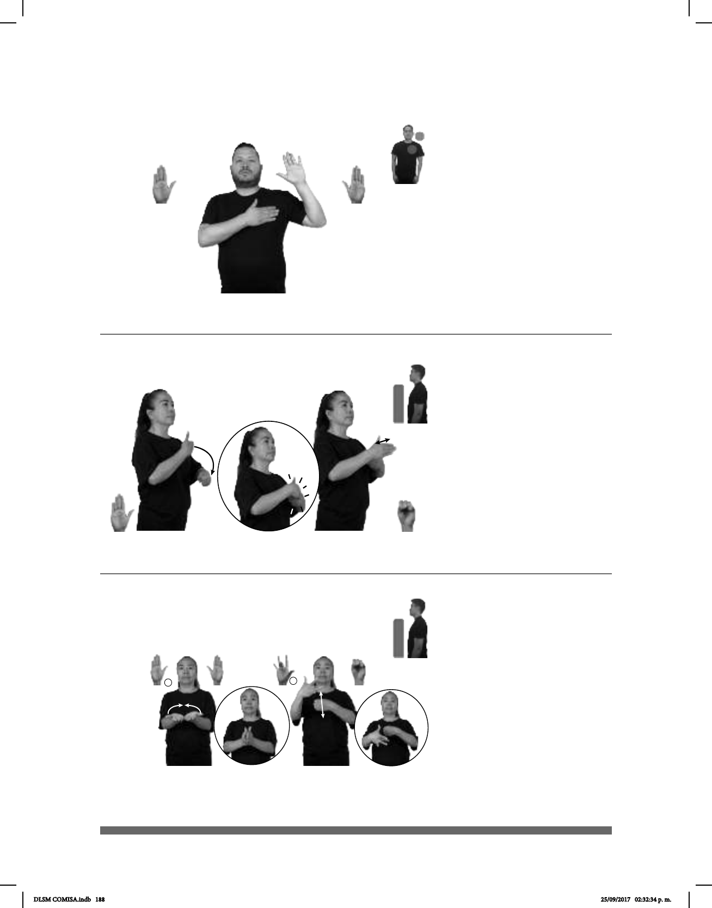

188
Seña: SB
MD y MB B-P.2
MD palma hacia
adentro. MB palma hacia afuera.
MD sobre el pecho.
MB a la altura de la cabeza.
1. v. tr. Obligarse a
hacer, decir o dar algo. 2. sust. f.
Expresión de la voluntad que
alguien se impone de cumplir algo.
Seña: SB
MD B-P.2, MB S.1
MD y MB palmas
hacia adentro.
A la altura del pecho.
La MD se mueve
formando un arco hacia enfrente
sobre MB y después la golpea.
adj. Cercano, que dista
poco en el espacio o en el tiempo.
(B-P 232)
1
2
(B-P 233)
dm-ALONDRA YA PROMETER pos-SU MAMÁ FUTURO MÉDICO
Alondra le prometió a su mamá ser médico.
PRÓXIMO CONFERENCIA LUGAR MONTERREY
La próxima conferencia será en Monterrey.
Seña: SC: I. SS; II. SB
I. B-P.2; II. MD D.M.5,
MB S.1
I. Las palmas inician
hacia arriba y terminan encontradas
frente a frente; II. MD y MB palmas
hacia
adentro.
I. A la altura del pecho; II. A
la altura del pecho. MD delante de MB.
I. Las manos se mueven
formando un arco hacia arriba; II. MD
recto hacia abajo.
sust. f. Tortilla de maíz o de
harina de trigo doblada por la mitad,
rellena de queso.
(B-P 234)
DOS QUESADILLAS QUESO dm-JORGE COMER
Jorge comió dos quesadillas de queso.
DLSM COMISA.indb 188 25/09/2017 02:32:34 p. m.